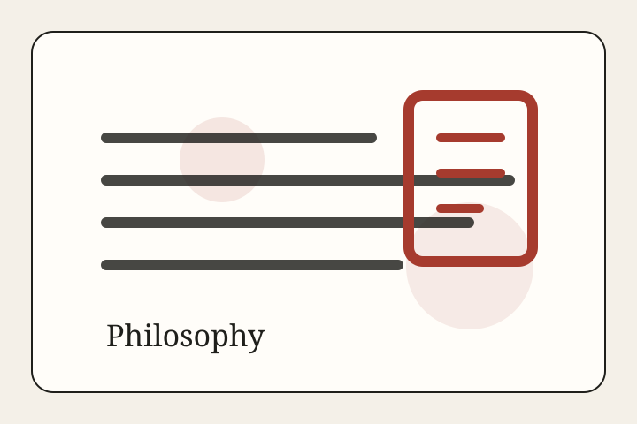

Philosophy • Essay
The Missing Word in the AI Debate Is Judgment.
AI governance keeps reaching for better standards, better tests, and better risk language. None of that removes the need for institutions to judge well in public.
Ideas Desk
Essays on judgment, ethics, institutions, and the words societies use to think.

Philosophy • Essay
AI governance keeps reaching for better standards, better tests, and better risk language. None of that removes the need for institutions to judge well in public.